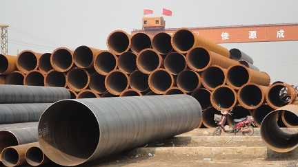

天津螺旋钢管幅回升的可能性不大
文章出处：admin 人气：发表时间：2017-09-12 22:30
近几年来，经济增速的放缓不断是一些外资机构唱空中国的次要理由天津螺旋钢管关于这一担忧，习近平态度明白，Q345B矩管维持更高的增长率非不能而实不为也。单纯依托安慰政策和政府对经济大规模直接干涉的增长，只治本、不治标，而树立在少量资源耗费、环境净化根底上的增长则更难以耐久。宁可降速也要变革的思绪所对应的是安慰偏好的下降，意味着四万亿将很难再度呈现，中国高层更倾向于经过变革为中国经济发明更临时的增长动力。在钢材市场交投疲软，钢价弱势下行的影响下，出口矿、钢坯等次要原资料价钱独木难支，延续高位震荡走势。

在成材市场继续走弱，天津螺旋钢管。下游钢厂推销原料持续慎重的背景下，出口矿、国产矿均进入片面的小幅下跌行情之中，周尾小幅反弹。下周仅3个任务日，目前市场张望气味浓郁，钢厂推销仍然慎重，中秋节前不大能够呈现补库存景象，加上市场活泼无限，因而我们以为本周出口矿市场弱势趋稳运转为主。
下一篇：螺旋管对于经济数据的预期不佳 上一篇：螺旋钢管规格厂家价格坚挺乏力
此文关键字：天津螺旋钢管幅回升的可
推荐产品


相关产品
相关推荐
随机推荐
- 南昌生产钢管 南昌钢管壁厚标准 南昌钢
- 最新螺旋钢管的规格表
- 螺旋钢管价格需求释放也是需要有过程的
- 螺旋焊管价格行情等离子切割烟尘的处理
- “稳增长”大潮成为建筑螺旋钢管市场的新亮点
- 香港X46锰螺旋钢管市场以稳为主
- 通辽流体用114*6的GB/T14291-2006煤气螺旋钢管需求将
- 7月18日济南螺旋钢管价格：价格稳 出货欠佳
- 螺旋钢管，直缝焊管焊后成品检验的方法很多，
- 滁州摩托车用壁厚7的GB/T14291-2006国标螺旋钢管多
- 长期低采购恐使螺旋钢管厂遭遇“无米之炊”的
- 螺旋管厂在制作螺旋焊管过程中,需要主意的问题
- 天津市螺旋钢管材料价格
- 臺東縣管道输送外径402的防静电防腐螺旋钢管量
- 螺旋钢管厂强度上存在的优势是什么
- 采购意愿不强，螺旋钢管市场成交大幅回落
- 螺旋管厂分析：23日江苏市场螺旋管价格暂稳观望
- 济南零利润处理426*18的地质钻探螺旋钢管长度允
- 北京优质螺旋钢管 北京螺旋钢管成型 北京内防腐
- 螺旋管厂螺旋钢管的保证条件有哪些
- 南京螺旋钢管标准 南京螺旋钢规格 南京
- 旺季行情基本落空螺旋钢管价格将继续窄幅波动
- 螺旋钢管价格螺旋钢管的防治腐蚀
- 螺旋钢管公司的发展前程
- 厦门外径610螺旋钢管 厦门dn920卷管供应
- 舞动节能的脚步
- 残次焊接螺旋钢管辨别有哪些办法
- 直缝管常用材质|直缝管主要应用范围
- 大同改拔560*14的X80直埋钢套钢保温螺旋钢管周长
- 上周螺旋钢管价格走势震荡厉害 预
重点推荐
- 螺旋管厂在制作螺旋焊管过程中,需要主意的问题
- 波段和趋势共振对螺旋钢管价格有不可预计的推
- 广东Q345b螺旋管 广东X42螺旋管 广东16锰螺旋钢管
- 天津螺旋钢管市场价格小幅下降20元
- 不同板厚及不同环境温度下16Mn钢的预热温度
- 螺旋管厂、螺旋钢管价格交货技术条件
- 沈阳购买螺旋钢管 沈阳螺旋钢管生产工艺 沈阳螺
- 云南螺旋钢管图片 云南排水用螺旋钢管 云南螺旋
- 安庆购买螺旋钢管 安庆螺旋钢管生产工艺 安庆螺
- 天津螺旋管厂-节能减排效力显现
- 南昌生产钢管 南昌钢管壁厚标准 南昌钢
- 外贸16锰钢管 外贸Q235A螺 外贸L245钢管
- 大庆Q235A螺旋管 大庆q345c螺旋钢管 大庆Q345b螺旋管
- Q235B螺旋管生产工艺Q235B螺旋管的特点
- 螺旋钢管按用途分为
- 成都保温螺旋钢管 成都16锰螺旋钢管 成都
- 螺旋管的外径,内径,相邻螺旋间距约为多少算标准
- 黄冈GB/T9711螺旋管 黄冈螺旋钢管市场 黄冈l360螺旋
- 什么是螺旋缝钢管|Q235螺旋钢管工艺流程
- “2012世界末日”之后能否也让螺旋钢管劫难重生